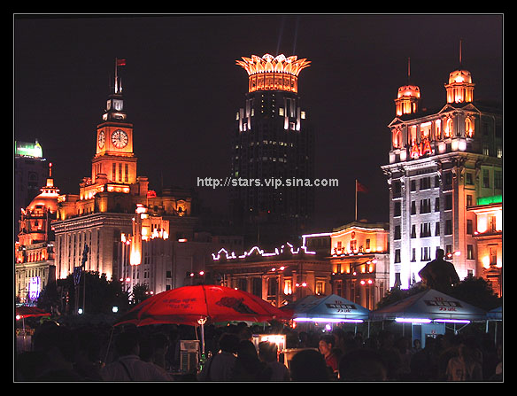
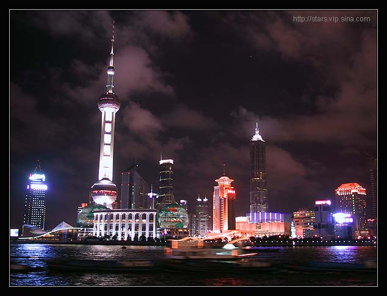

迟
到
的
上
海
Oct 2002
2002年8月初，
我在上海呆了10来天，去面试。
感觉是一个好的城市。
最肮脏和最清洁，最卑鄙龌错最高尚纯洁都可以在这个城市轻易找到。
这就是上海的可爱之处。任何层次的人和思想都可以在这里找到寄生之处。年底之后我也许会再回上海。长沙我生活了这段时间，已经没什么感觉，
我变成了一个过客，在这里。对这个世界来讲，好象哪里都是过客anyway.
北京让我觉得大而不当，
深圳所倚托的香港也正在没落，而上海，一如它70年前，
那活力和糜烂没有任何中国城市可以比得上。上个世纪二十三十年代的文化底子还在。
What is
文化,
by the way? 我也不知道，这只是我的感觉。在很多情况下，文化是用钱来购买的，
比如一年难得去一两次的交响音乐会和严肃的博物馆美术馆。真正的文化不需要大的城市和很多物质来培养，
只需要思考的头脑。
20，30年代的上海老主人也正在回来，
AIA，东方汇理，等等等等。Old
things are coming back.:)
在上海，在朋友家里作客。湖南路那法租界的百年梧桐非常的charming，树荫掩映之下的朋友的复式单元和他自己极为得意的他自己创意的装修设计
－
的确，二楼主人房和浴室间由一面顶天立地的透明大玻璃隔断，玻璃上琉璃着全幅精细的古文字，灯光效果之下的双人大浴缸爽极了。整个设计透出中国古典气质里的极尽前卫。另外一位朋友的金茂大厦酒店客房也极尽豪华，
不过她也抱怨西餐的菜式比如鸡尾酒水单一。她冲凉去了，
我就在落地玻璃窗前静静凝望对面外滩的金碧辉煌。 雨下得任性而且疯狂，那辉煌被模糊得慢慢变了形。
我也在街头看到外来劳工的妻子和衣着破烂的孩子在快乐的一起玩一辆破烂的玩具车。我在一个破烂的小旅馆的客房里蜷缩着，
和安徽的外来服务员妹妹聊她们眼里的上海。她们说很艰难，和没有什么感觉，一如我自己。
现在的上海，最高级的职位，
是老外和外地白领；最低级的职位，
是外来的劳工。
上海本地人在中间。所以，上海人现在比较的热情，不很排外。他们也排不起来。上海人，
和上海，
是在搭建一个舞台。跳舞的，是外来的人。舞台是需要戏剧性的，最富贵和最贫穷才能演出轻而易举的戏剧。平凡的生活一般是没人注意的，
因为那需要绝佳的导演才能变成一出好的戏剧。
I love this city, anyway. What a show.:)) Let me try
my best to enjoy that sort of life for a while.:))
I will be back soon.
虽然我不知道来做什么。上个世纪30年代穿着长袍马褂说着英文的洋买办在上海滩出没，而我，最可能将是他们的21世纪幽灵。
在上海的几天天气出奇的好。不是为摄影来的，
胶片机三角架都没带，
在很艰苦的摄影条件下我用数码机胡乱拍了几张，向大家汇报一下。
下图是上海外滩一角。人流轻烟，
是借夜幕掩盖之下的。游人不少，
很多的京腔，
在有意无意的嘲笑着上海人。
10/Oct/2002, revised 18/11/2002

另外一张。这是在外滩散步时G1数码机手持拍的， 还算清楚， 运气好。好象曝光了1.6秒。看来俺手持相机的功夫日渐长进了，哈哈：

我在新浪旅游论坛贴了这篇文章，没想到引起了不少争论，现将部分帖子刷来看看，比较的好玩：
-----------------------------------------------------------------------
繁华到底是谁的？
版权所有：我爱加州旅馆 原作 提交时间：22:13:35 10月11日
我也是上海住了几天，住在福建南路的一个酒店里。房间很小，可是很干净。虽然服务员的态度不是很好，可是为了上海外滩、南京路和我们只是游人，所以也不去计较了。这个酒店最好的地方在于它离我想去的地方都很近，南京路、外滩只要步行过去就好了。我选择在傍晚6点的时候花了五毛钱坐渡轮，那时候华灯初上，江两岸霓红闪烁，整个城市华丽无比。我以为这个城市里的人生活得都很华丽，起码与我是不同的。可是渡轮上多多是行色匆匆的人，推着旧的单车，疲惫和辛劳都在脸上，没有多少人可以安静地欣赏两岸的风光。我住的酒店附近就是居民住所，上海人穿着大花的睡衣踢踏着拖鞋出出入入，每天早上我都会被楼下报摊小贩卖报的吆喝声吵醒，这是一种平凡人的真实。繁华到底是属于谁的？在华丽的表面下我们依然要平凡真实辛勤地生活。
别样的上海感觉
版权所有：依然711 原作 提交时间：22:18:33 10月11日
迎来上海！但愿一年后，你的上海感觉会不同于现在的。太多的浮光掠影是捕捉不到真正的FEELING，真正的上海情致是内敛的、沉静的、修炼的。
主题：不是上海
版权所有：在路上的where 原作 提交时间：11:10:09 10月12日
少直接说别人的文字不好——我们通常都习惯了含蓄地说“我不喜欢”——今天窗外阳光灿烂，气温又回暖了，进入我所钟爱的上海的十月以来，总让我莫名其妙地开心，所以，直接说：这篇不好，是我看过写上海最糟糕的。
完全没有情感的文字堆砌，生硬夹杂的E文词句，我敢说几乎90%的人都是直接从标题跳到那张夜景来看的——PP还行。
所谓的等级之分所谓的藏污纳垢所谓的过去和现在都是胡说八道，我为这个城市遗憾：你在此停留10天居然看到的是这么些东西，要么这个城市有问题，要么你不对劲儿——我倾向于是后者，因为你自己说：“长沙我生活了这段时间，已经没什么感觉，我变成了一个过客，在这里。对这个世界来讲，好象哪里都是过客anyway.”——虽然我实在弄不明白最后那个anyway从词意到语意的含义。对了，还有语法和句子结构。
我不批评谁——有人一定会说我没资格我自己也觉得完全没有必要——只希望所有到过和还没有到过、喜欢还是讨厌上海的读到这篇的人们，别被误导了，这绝对不是上海——即便退回半个多世纪的张和苏两个MM笔下的上海，也不是。这不过是一个城市：生活，谋生，休闲，交朋结友，只要你愿意和敢于站在这里看ta，ta就是你的城市。
主题：上海是有钱人的天堂，穷人的地狱
版权所有：jack_elegant 原作 提交时间：18:08:25 10月12日
上海在很早以前就被称为冒险家的乐园，现在是有钱人的天堂。上海人和中国其他任何地方的人都没有什么两样，同样要为生活而奔波，同样的平凡和无奈。对大部分的上海人来说，上海只是他们赖以生存的一个城市而已，他的繁华和他们没有什么直接的关系。
主题：上海就是上海
版权所有：家猫猫 原作 提交时间：23:09:56 10月12日
每一个城市都有自己的性格，我不承认上海是有钱人的天堂，穷人的地狱。上海容忍各种各样的生活方式，不是一个穷字和一个富字可以了得。即使是下岗，也依旧会有有条不紊的生活。
其实，上海人在上海不是最富的人群，这一点其实和北京有些象。这里是淘金人的乐园，而不少本地人是难得愿意为了更多的银子而放弃闲适的生活。也许，他们构成的是这个城市的中产阶级的主体，知道如何挣钱，更知道如何恰如其分地花钱。
主题：老弟，10天的确看的有限哦。
版权所有：十万蝉声 原作 提交时间：00:47:44 10月14日
我也到了上海，在上一次来是95年了，当时感觉就比北京有活力，其实走的地方多了，觉得南方的城市都挺有活力。这次来，浦东的变化最大，毕竟那时还是大片的空地。作为城市来说，这里生活还是很方便。更多的感觉以后慢慢写来。
也许你只注意了反差，没有时间体会大部分人的生活。每个地方都有吸引人和让人讨厌的东西。总听人讲北京人，尤其出租车司机态度不好，不过无论长相和说话都不象北京人的却土生土长的我却从为遇到。相反，前两天在这里却见识到了真正厉害的司机，嗓门奇大还骂人，好凶！和我们的本地同伴吵起来。想起来挺好笑，这样的事哪里都有嘛。说明这里同中国任何一个城市一样正常。
主题：相比两位仁兄
版权所有：judie 原作 提交时间：13:56:33 10月14日
也许我更有资格去评说上海，但现在已经没有习惯去评论一个地区或城市，因为如何去评论始终都是肤浅的，就如以前评论过香港就让我后悔了，因为第一次去香港和第十五次去香港的感受已经截然不同……
star,以前习惯看你的片，没想到你的文字也是这么有“读头”的啊！
版权所有：行行摄摄 原作 提交时间：17:50:12 10月14日
管它什么中英文夹杂，上海不就是这个味吗？？虽然你对上海的感觉与我的截然相反，我仍然要为你直白的文字和好片喝上一声彩！！
全部讨论帖见下面的联接：
http://newbbs4.sina.com.cn/newfbin/view.cgi?forumid=109&postid=345008